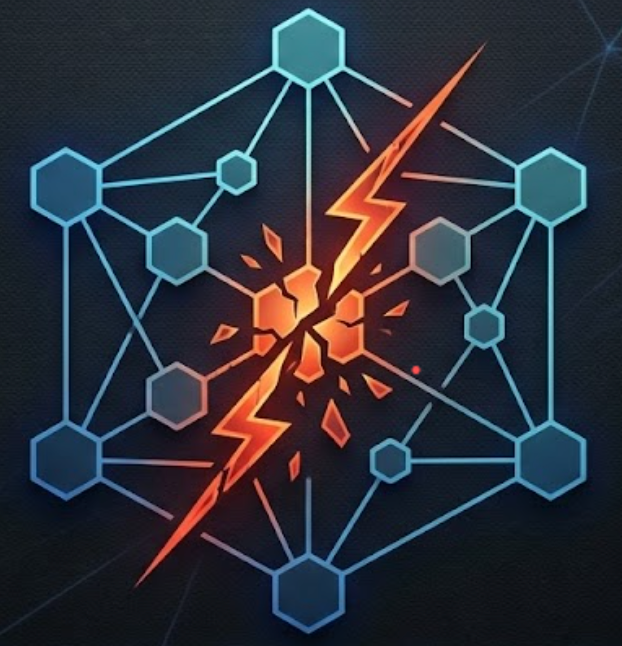

AI Agent Incident & Vulnerability Knowledge Graph
Audit-grade dossiers of real-world autonomous agent failures, court rulings, regulatory SEC filings, and security advisories.
Verifiable semantic relationships structured as Subject → Predicate → Object
| Subject (Entity) | Predicate (Relation) | Object (Target Entity) | Inspect Action |
|---|